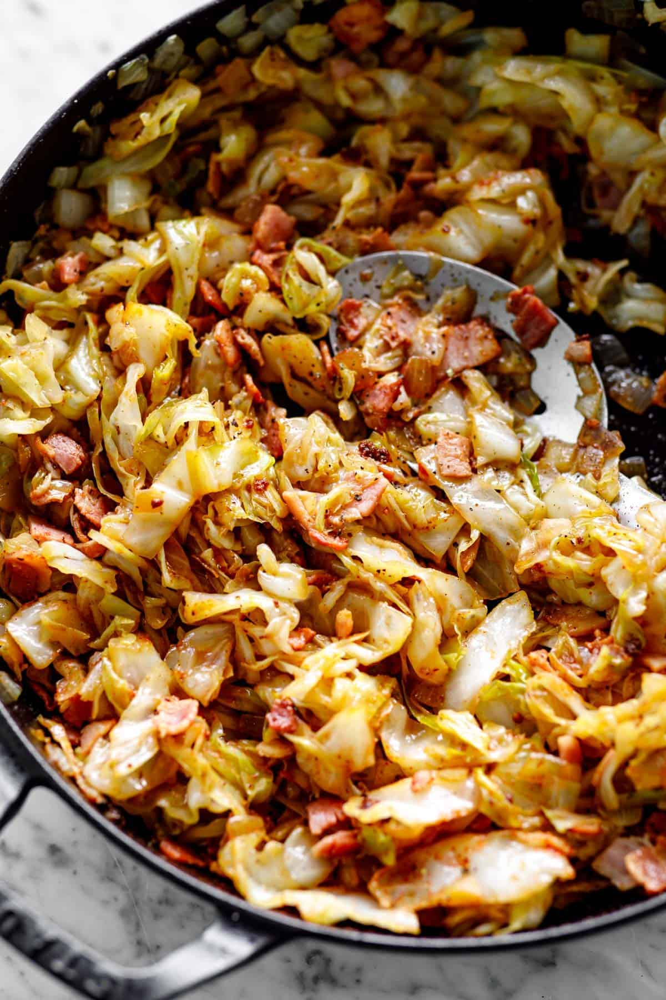

Go Back
Fried Cabbage

A delicious vegetable dish perfect for anytime of the day
Ingredients
- 1 Cabbage
- 1 Onion
- 1 Pound of Bacon
- Spice Blend
- Mushrooms
- Butter
Creation
- Start by cooking the bacon on low to render all the fat
- Remove some of the grease and bacon and begin to add the mushrooms and onion
- When the mushrooms begin to sweat add the cabbage and your blend of spices chosen. I usually go for paprika salt pepper and turmeric
- Let the cabbage cook in the pot for 30 minutes stirring occasionally until all the ingredients are cooked through.
- Add a small portion of butter and season to taste
- Plate with an egg in the morning or pair as a side for dinner.